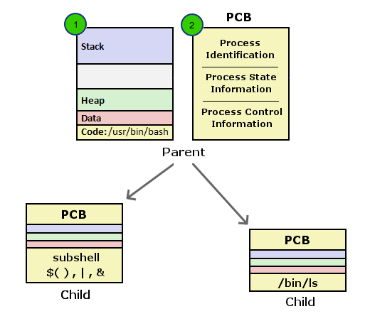
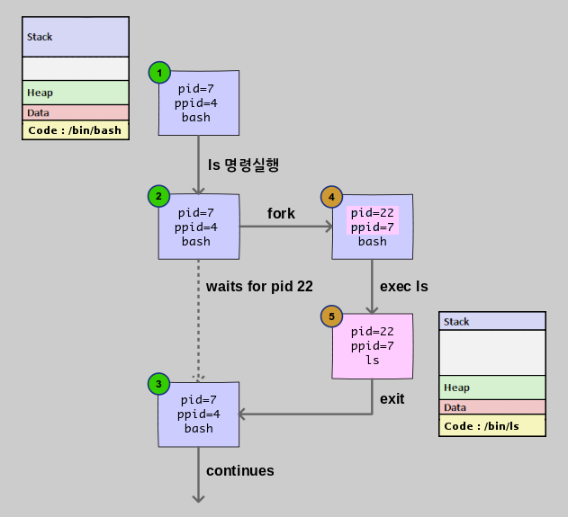
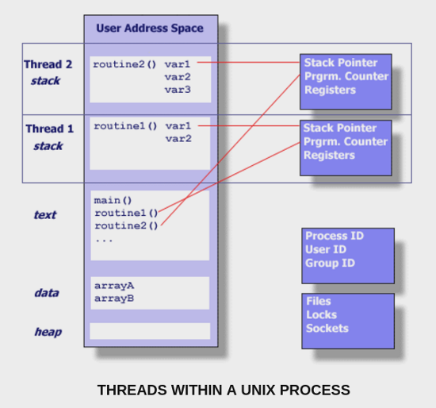
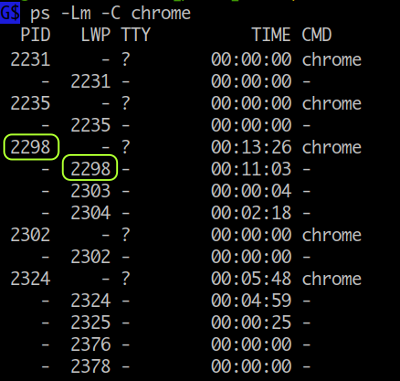

Process Creation
CPU 는 기계이므로 프로세스라는 개념을 모르는 것과 같습니다. 전부 OS 프로그래머에 의해서 프로세스라는 개념도 만들어지는 것입니다. 똑같은 mov, add, sub ... instructions 이 CPU 에서 실행 중이더라도 어떤 순간에는 process 1 이 되고 어떤 순간에는 process 2 가 되고 또는 OS 가 실행하는 코드가 됩니다.
Introduction to Operating Systems : https://rond-o.tistory.com/252
이번에는 다음과 같은 의문사항들에 대해 알아보도록 하겠습니다.
subshell 에서는 왜 parent shell 과 동일한 환경을 갖게되며 export 하지도 않은 변수, 함수를 그대로 사용할 수 있는가?
그리고 child process 에서는 왜 export 한 변수, 함수만 사용할 수 있는가?
변수를 export 했는데 터미널을 새로 열면 왜 값이 보이지 않는가?
subshell, child process 에서 설정한 변수는 왜 parent shell 에는 적용되지 않는가?
또한 parent shell 에서 값을 변경하면 왜 실행 중인 subshell, child process 에 적용되지 않는가?
왜 현재 shell 의 변수값을
( )$( )` `|&에서 변경할 수 없는가?
Process 주소공간 과 PCB

위 그림에서 1번은 프로그램( 명령 ) 을 실행했을때 메모리상의 주소공간을 나타냅니다. 만약에 컴퓨터 시스템에서 하나의 프로그램만 실행한다면 저 주소공간 하나 외에 다른것은 필요하지 않을것입니다. 하지만 실제로는 여러개의 프로세스가 동시에 실행되므로 프로세스들을 관리하고 스케줄하기 위해 Operating System 이 필요하게 됩니다. 이때 OS 는 프로세스의 PID, PPID 는 무엇이고, 현재 상태( stopped, running ... )는 어떻게 되는지, 사용중인 파일들은 어떻게 되고, cpu 사용시간은 얼마나 되는지와 같은 정보들을 기록하고 관리하는데 이때 사용되는 구조체가 그림에서 2번인 PCB (Process Control Block) 입니다 ( 또는 Task Control Block, Process Descriptor, Task Descriptor 모두 같은 말입니다. 리눅스의 경우 struct task_struct 을 말함 ). PCB 는 항목수가 140 개가 넘을 정도로 큰 구조체 이며 특정 프로세스에 대한 모든 정보가 담겨져 있다고 할 수 있습니다.
Shell 을 사용하면서 설정, 변경하게 되는 변수, 함수, 옵션설정등 프로그램에 관련된 사항은 모두 1번 프로세스 주소공간에 위치합니다. 프로세스 주소공간은 메모리 내에서 다른 프로세스 주소공간에 대해 각각 독립적으로 존재하므로 프로세스 A 에서 변수값을 설정, 변경해도 그상태가 다른 프로세스의 주소공간에 영향을 미치지 않습니다. 따라서 parent shell 에서 설정한 변수값이라도 그값이 subshell, child 프로세스에 적용되지 않으며, 또한 subshell, child 프로세스 에서 변경한 값도 parent shell 프로세스에 적용되지 않게 됩니다.
( ) $( ) ` ` | & 에서 설정한 값들은 subshell 상에서 설정한 값이므로 실행을 마치고 현재 shell 로 돌아오면 프로세스의 주소공간이 다시 바뀌게 되므로 설정한 값들이 존재하지 않게 되는 것입니다.
프로세스 간에 데이터를 전달하기 위해서는 파이프나 파일을 이용하거나 OS 에서 제공하는 shared memory, massage queue, socket 같은 IPC (Inter Process Communication) 방법을 사용합니다.
Process 생성 단계
프로세스 생성 단계를 살펴봄으로써 subshell 과 child process 의 차이점에 대해 알아보겠습니다.
여기서 사용된 fork, exec, exit, wait 은 OS 에서 제공하는 system call 함수입니다.

1. ls 명령 실행
2. fork 단계
fork 은 unix 에서 새로운 프로세스를 만드는 방법입니다.
새로운 프로세스가 생기는 것이므로 PID, PPID 가 변경된 것을 볼 수 있습니다 (4번).
fork 은 현재 프로세스와 동일한 주소공간을 갖는 프로세스를 생성합니다.
그러므로 생성 초기에는 현재 bash shell 과 동일한 환경이라고 할 수 있습니다.
주소공간이 같으므로 $$ 나 $PPID 와 같은 변수 값들이
변경 없이 그대로 나오게 되고 export 하지도 않은 변수나 함수들도 사용할 수 있게 되는 것입니다.
이 상태가 바로 subshell 입니다.
subshell 에서 명령이 실행될 때는 $BASHPID 가 새로 생성된 PID 로 설정되어 실행됩니다.
마찬가지로 awk 프로그램을 실행 중에 fork 을 하게 되면 현재 실행 중인 awk 프로그램과 동일한 상태의 프로세스가 생성되는 것입니다. [ 활용예 ]
이때 실제 copy 가 일어나는 것은 아니고 COW ( Copy On Write ) 기법이 사용됩니다. 처음에는 parent 와 child 프로세스가 같은 메모리 영역을 사용하다가 write 이 발생하면 그때 해당 영역이 copy 되어 해당 프로세스 영역으로 쓰기가 됩니다.
3. exec 단계
새로운 프로세스가 생성된 상태에서 기존 프로그램의 주소공간을 삭제하고 새로 실행될 프로그램을 메모리로 로드하여 실행시키는 것이 exec 입니다 ( exec 을 다른말로 loader 라고도 합니다 ). 위 그림에서 보면 기존의 bash 프로그램 주소공간이 exec 에 의해 ls 프로그램 주소공간으로 대체된 것을 볼 수 있습니다 (5번). 주소공간이 바뀌게 되므로 기존에 bash 프로그램에서 사용되던 변수들이나 함수들은 모두 사용할 수 없게 됩니다.
exec 함수를 실행할 때는 환경변수( export 한 변수, 함수 )를 인수로 전달하기 때문에 child process 에서 사용할 수 있게 됩니다. 현재 shell 에서 변수를 export 하였는데도 새로 터미널을 열었을때 보이지 않는 것은 새로 생성된 프로세스는 현재 shell 의 child process 가 아니기 때문입니다.
4. exit 단계
child 프로세스가 exit 함수를 실행하면 자신이 사용하던 모든 자원을 해제하고 종료하게 됩니다. 이때 종료 상태 값을 PCB 항목에 설정하는데 parent 프로세스는 wait 함수를 통해 값을 구할 수가 있습니다. child 프로세스가 종료하였는데도 parent 프로세스에서 wait 함수를 호출하지 않으면 child 프로세스는 OS 가 관리하는 프로세스 테이블에 계속 남아 있게 되는데 이 상태가 좀비에 해당합니다.
만약에 parent 프로세스가 child 보다 먼저 종료하게 된다면 child 프로세스는 PID 1번인 init 프로세스로 reparent 가되고 init 프로세스는 주기적으로 wait 함수를 호출하므로 프로세스 테이블에서 정리되게 됩니다.
5. continue
fork-exec
위에서 살펴본 바와 같이 shell 에서 명령을 실행하면 fork 에의해 새로 프로세스가 생성되고 exec 에의해 새로운 프로그램으로 주소공간이 대체되어 실행됩니다. 보통 fork-exec 이라고 말하는데 이 과정을 shell 에서 표현해보면 fork 은 subshell 에 해당하고 exec 은 exec builtin 명령으로 나타낼 수 있으므로 아래 두 명령은 실제 같은 결과를 갖게 됩니다.
$ /bin/date
Mon Dec 28 13:49:17 KST 2015
$ ( exec /bin/date )
Mon Dec 28 13:49:25 KST 2015
하지만 subshell 의 경우 내부적으로 subshell optimization 을 하기 때문에
아래 첫 번째의 경우 exec 을 사용하지 않아도
fork (subshell) -> fork -> exec 이 아닌 fork (subshell) -> exec 만 하게됩니다.
좀 더 자세한 내용은 별책부록 subshell 을 참고하세요
$ ( date ) # fork (subshell) -> exec
$ ( date; date ) # fork (subshell) -> fork exec -> exec
^^^^^^^^^^ ^^^^
첫번째 date 두번째 date
(처음 fork 프로세스가 사용됨)
/usr/bin 디렉토리에 위치한 egrep 과 fgrep 명령은 shell 스크립트 파일인데
exec 을 활용하는 것을 볼 수 있습니다.
만약에 exec 을 사용하지 않는다면 /bin/sh 프로세스 아래 또 grep 프로세스가 생성돼서
실행되겠죠
$ cat /usr/bin/egrep $ cat /usr/bin/fgrep
#!/bin/sh #!/bin/sh
exec grep -E "$@" exec grep -F "$@"
man page 색상 넣기
# export 한 환경변수를 man "$@" 명령에만 적용하기 위해
# 함수를 정의할때 { ;} 대신에 ( ) subshell 을 사용
function man() (
export LESS_TERMCAP_md=$'\e[01;1;34;40m' # begin bold
export LESS_TERMCAP_us=$'\e[04;4;35;40m' # begin underline
export LESS_TERMCAP_ue=$'\e[0m' # end underline
export LESS_TERMCAP_mb=$'\e[0m' # begin blinking
# export LESS_TERMCAP_so=$'\e[0m' # begin standout-mode - info box
export LESS_TERMCAP_se=$'\e[0m' # end standout-mode
export LESS_TERMCAP_me=$'\e[0m' # end mode
command man "$@" # 마지막 명령은 subshell optimization 에의해 또 fork 되지 않는다.
)
만약에 다음과 같이 man 명령과 동일한 이름의 스크립트 파일로 작성한다고 하면 이 경우에는
이미 스크립트 프로세스가 실행 중에 있고 /usr/bin/man 명령 이후에는 더 이상 실행할 명령이 없으므로
현재 스크립트 프로세스를 이용해 exec 으로 실행하는게 효율적이겠죠
$ cat ~/bin/man
#!/bin/bash
export LESS_TERMCAP_md=$'\e[01;38;5;74m'
export LESS_TERMCAP_us=$'\e[04;38;5;146m'
. . .
# /usr/bin/man "$@" <--- 실행을 위해 또 프로세스를 생성할 필요가 없다
exec /usr/bin/man "$@" <--- 현재 스크립트 프로세스를 이용해 실행
subshell 과 child process 구분
subshell 도 parent 프로세스에서 생성된 자신의 PID 를 갖는 child process 입니다. 하지만 exec 에 의해 생성된 프로세스와 구분하기 위해 분리하여 설명하였습니다.
Thread
워드프로세서나 웹브라우저 같은 프로그램을 실행하면 보통 내부적으로 여러 개의 스레드를 생성하여 사용합니다. 만약에 스레드라는 기능이 없어서 모두 프로세스로 실행해야 된다고 하면, 프로세스는 독립적인 주소공간도 생성해야 하고 필요로 하는 정보와 리소스가 많습니다. 또한 프로세스들끼리 서로 데이터도 주고 받아야 할텐데 각기 주소공간이 독립적이라 IPC 방법을 사용해야 합니다.
thread 는 기존의 프로세스가 가지는 주소공간과 리소스를 공유하면서 OS 가 스케줄하고 관리하는데 필요한 최소한의 정보만을 가지고 프로세스(thread)를 만들어 사용할 수 있게 해줍니다. 스레드는 프로세스의 주소공간을 공유하므로 데이터를 주고받기 위해 따로 shared memory 같은 IPC 방법을 사용할 필요가 없습니다. 그냥 한 스레드가 global 변수에 값을 저장하면 다른 스레드가 변경된 값을 읽고 쓸 수가 있습니다.
아래 그림은 하나의 프로세스에서 실행되는 thread 들을 보여주는데요. 프로세스가 가지는 text, data, heap 주소공간과 Files, Locks, Sockets 같은 리소스들을 공유하면서 각자 실행에 필요한 stack 을 가지고 독립적으로 실행되는 것을 볼 수 있습니다. OS 가 스케줄하는 단위도 프로세스가 아니라 스레드 입니다. 그래서 스레드를 이용하면 각각의 cpu 코어에서 실행될 수 있습니다.

사실 프로세스도 하나의 스레드 입니다.
프로세스가 생성되면 스레드가 하나 생기는 것입니다.
스레드는 TID (Thread ID) 를 갖는데 TGID (Thread Group ID) 는 PID 와 같습니다.
다음은 ps 명령을 이용하여 chrome 브라우저의 PID 와 TID 를 조회하는 예인데요.
LWP ( Light Weight Process ) 로 표시되는 두번째 컬럼이 TID 인데 첫번째 값이 PID 와 같은 것을 알 수 있습니다.

# pthread_self() 는 스레드 아이디를 조회하는 함수인데 메인 함수에서도 조회가 된다.
$ gcc -g -xc - <<\@ && ./a.out
#define _GNU_SOURCE
#include <stdio.h>
#include <pthread.h>
#include <unistd.h>
int main()
{
printf("SELF : %lu, TID : %d, PID : %d\n" , pthread_self(), gettid(), getpid());
}
@
SELF : 139972798170496, TID : 2938236, PID : 2938236
TID 는 ps 명령의 H, -L, m, -m, -T 옵션을 이용해 조회해볼 수 있습니다.
타이틀 값이 LWP, SPID 로 나오는것이 TID 입니다.
# firefox 브라우저를 조회
$ ps -Lm `pgrep -f firefox`
PID LWP TTY STAT TIME COMMAND
1933 - ? - 9:20 /home/mug896/Programs/firefox/firefox
- 1933 - Sl 1:14 -
- 1941 - Sl 3:12 -
- 1942 - Sl 0:01 -
- 1943 - Sl 0:00 -
. . . .
. . . .
# PSR 컬럼은 스레드가 바운드된 cpu core 를 말함
$ ps -mo pid,tgid,tid,%cpu,psr,command -p `pgrep -f firefox`
PID TGID TID %CPU PSR COMMAND
1933 1933 - 2.8 - /home/mug896/Programs/firefox/firefox
- - 1933 0.3 3 -
- - 1941 0.9 4 -
- - 1942 0.0 2 -
- - 1943 0.0 5 -
- - 1944 0.0 5 -
- - 1946 0.0 4 -
- - 1947 0.0 1 -
. . . .
. . . .
/proc 파일 시스템의 task 디렉토리를 통해서도 알아볼 수 있습니다.
$ ls /proc/$PID/task/ # thread ID 를 나타냄.
19242/ 19244/ 19246/ 19248/ 19250/ 21141/ 21143/ # 현재 $PID 프로세스가
19243/ 19245/ 19247/ 19249/ 19258/ 21142/ 21305/ # 14 개의 스레드를 사용중.
shell 에서는 기본적으로 명령 ( fork-exec 에 의해 생성되는 프로세스 ) 를 다루므로 thread 를 직접 생성하거나 컨트롤할 수 없습니다. 스크립트에서 thread 를 다루려면 Perl 언어 ( shell + sed + awk + α ) 를 사용할 수 있습니다. [예제]
요즘 가상머신, 컨테이너 같은 가상화 기술이 발전하고 있는데 여기에도 OS 스레드가 사용됩니다. 가령 가상머신에 CPU core 를 2 개로 설정하면 해당 가상머신에 OS 스레드가 2 개 할당됩니다.
User Threads
위에서 설명한 OS 커널에서 제공되는 스레드를 OS 스레드 ( 또는 native 스레드 ) 라고 하는데, 스레드 기능을 유저 스페이스에서 흉내 낼 수도 있습니다. 이렇게 하면 스레드 생성에서부터 스레드간 스위칭, 동기화 같은 작업이 커널의 개입 없이 모두 유저 모드에서 처리되기 때문에 더 가볍고, 빠르게 됩니다. 원래는 싱글 코어 CPU 가 사용되던 시절, OS 에서도 스레드 기능이 제공되지 않을 때부터 사용되던 기술인데 요즘에는 다양하게 활용되고 있습니다. 예를 들어 Go 언어의 goroutine 이 일종의 user threads 입니다. 또한 스레드와 비슷한 cooperative multitasking 을 하는 coroutine, generator, async, await, future, promise 도 모두 유저 모드에서 처리되는 것입니다. ( Go 언어도 기본적으로 cooperating scheduler 입니다.)
cooperative multitasking 기술은 예전에 Windows 3.1, MacOS 9 에서도 잠깐 사용되었었는데 태스크가 실행 중에 자신이 직접 스위칭을 위해 yield 하는 것입니다. 따라서 만약에 특정 프로그램이 실행 중에 yield 를 하지 않으면 바로 시스템 hang 으로 이어집니다. 이것을 보완하기 위해 나중에 OS 스레드를 사용하는 preemptive multitasking 이 나오게 됩니다.
user threads 를 green threads 라고도 많이 이야기하는데 이것은 싱글 코어 CPU 가 사용되던 java 초기 버전에서 사용되던 스레드 모델로 user threads 대표격에 해당합니다 ( 지금은 멀티코어 CPU 가 나오면서 native 스레드로 바뀌었음 ). 이름은 스레드를 디자인한 The Green Team at Sun Microsystems 에서 유래한 것입니다.
Hardware Threads
CPU 코어에서 제공되는 스레드입니다. 하이퍼 스레딩 기술이 적용된 CPU 에서는 코어 당 2 하드웨어 스레드가 됩니다. IBM POWER CPU 의 경우엔 코어 당 8 개의 스레드를 제공하기도 합니다. 실제 하나의 물리 코어에서 2 개의 스레드를 동시에 실행하는 것이기 때문에 처리 속도가 2 배로 증가하지는 않지만 1 개의 스레드만 실행했을 때보다는 CPU 코어 내에 존재하는 여러 연산 유닛을 효율적으로 활용할 수 있게 되어 처리 속도가 증가합니다.
하이퍼 스레딩 기능이 있는 4 코어 CPU 에서 100 개의 OS 스레드를 생성해서 서버를 운영할 경우 100 개의 OS 스레드가 8 개의 하드웨어 스레드를 두고 경쟁하게 됩니다.
Threading Models
: 문자 왼쪽은 프로그램 실행중에 유저가 생성하는 스레드 이고 오른쪽은 OS 스레드 입니다.
[ 1 : 1 ]프로그램 실행 중에 유저가 스레드를 하나 생성하면 OS 스레드와1:1매칭이 되는 형태입니다. C/C++ 에서 pthread 를 생성하거나 java, perl 에서 스레드를 생성하면 바로 OS 스레드가 되죠. 이런 로레벨 언어는 future, promise 같은 기능도 OS 스레드를 생성해서 처리합니다. ( dart 언어의 isolate 도 OS 스레드로 동작합니다.)[ N : 1 ]프로그램 실행 중에 유저가 N 개의 스레드를 생성하면 실제는 1 개의 OS 스레드 위에서 돌아가는 형태입니다. 예를 들면 python, nodejs, dart 에서의 coroutine, generator, async, await, future, promise 같은 것이 여기에 속합니다. nodejs 의 cluster 나 dart 의 isolate 를 이용하면 멀티프로세스 or 스레드로 실행을 할수있지만 IPC 을 이용한 message send (nodejs) 나 isolate port (dart) 를 이용해 데이터를 주고받기 때문에 스레드간 경합이 발생하지 않습니다.[ M : N ]프로그램 실행 중에 유저가 M 개의 스레드를 생성하면 실제 N 개의 OS 스레드 위에서 돌아가는 형태입니다. 주로 멀티 코어 CPU 에서 사용되는데 Go 언어가 사용하는게 이 모델입니다. 여기서 M 은 N 보다 큽니다 ( M > N ) [참조영상]. 멀티 스레드가 사용되므로 mutex 나 atomic 같은 lock 관련 함수가 제공됩니다.
[ N : 1 ],[ M : N ]에서처럼 OS 스레드 위에서 생성되는 스레드를 좀 더 작은 단위의 스레드란 의미에서fiber라고도 합니다 (참조1 ,참조2). 이와 같은 모델을 사용하는 이유는 최대한 하드웨어 자원을 효율적으로 사용하기 위해서입니다. 가령 그래픽 유저 인터페이스를 처리한다거나 또는 웹서버를 운영한다고 할경우1 : 1모델의 경우 동시 접속자 수가 10,000 명이라면 ( 동시적으로 처리해야될 작업이 10,000 개 ) 10,000 개의 OS 스레드가 생성, 삭제, 스케줄 되어야 하는데, CPU 코어당 1 개의 OS 스레드만 생성해서 fiber 로 운영한다면 더 효율적이겠죠. (예: nginx 서버)
[ N : 1 ]모델을 사용하는 언어들의 경우 싱글 OS 스레드로 실행되기 때문에 mutex 같은 lock 이 필요 없을것 같지만 critical section 내에 async 코드가 포함될 경우 하나의 스레드만 실행되게 처리해 주어야 합니다. ( mutex 예제 )
Quiz
host 명령을 이용하면 도메인이 어떤 IP 주소를 가지고 있는지 알 수 있는데요.
특정 IP 주소가 어떤 국가에 속하는지 알아볼 수 있는 스크립트를
https://geoiplookup.io/api 를 이용해서 작성하는 것입니다.
$ cat geoip.sh
#!/bin/sh
exec http -b https://json.geoiplookup.io/$1
$ host www.google.com
www.google.com has address 142.250.206.196
www.google.com has IPv6 address 2404:6800:400a:80c::2004
$ ./geoip.sh 142.250.206.196
{
"asn": "AS15169 - Google LLC",
"asn_number": 15169,
"asn_org": "Google LLC",
"city": "Osaka",
"connection_type": "Corporate",
"continent_code": "AS",
"continent_name": "Asia",
"country_code": "JP",
"country_name": "Japan", # IP 주소는 일본에 위치.
"currency_code": "JPY",
"currency_name": "Japanese Yen",
"district": "Osaka-shi",
"hostname": "kix07s07-in-f4.1e100.net",
"ip": "142.250.206.196",
"isp": "Google LLC",
"latitude": 34.6937,
"longitude": 135.502,
"org": "Google LLC",
"postal_code": "540-0002",
"premium": false,
"region": "Ōsaka",
"success": true,
"timezone_name": "Asia/Tokyo"
}
$ cat myip.sh
#!/bin/sh
exec curl -s https://ipinfo.io/ip
$ ./myip.sh
210.95.27.89
2 .
시스템에서 생성할 수 있는 최대 스레드 개수는 어떻게 알 수 있을까요?
이것은 시스템에 설치되어 있는 메모리의 양에 영향을 받습니다.
$ cat /proc/sys/kernel/threads-max
126917
$ LESS='+//proc/sys/kernel/threads-max' man proc
. . .
# 현재 시스템에 생성되어 있는 전체 스레드 개수
$ ps ax -L --no-headers | wc -l
1915
# 특정 프로세스가 사용중인 스레드 개수 ( nlwp : Number of Light Weight Processes )
$ ps -o thcount= 19783 # 또는 thcount 대신에 nlwp, 등호(=) 는 헤더 출력을 방지하는 역할
73
$ grep -i threads /proc/19783/status
Threads: 73
# 특정 프로세스가 사용중인 모든 스레드 출력
$ ps -L 19783
# ps 명령을 프로세스가 사용중인 스레드 개수 순서로 출력
$ ps ax -o pid,nlwp,cmd | sort -nr -k2,2 | less
3 .
다음은 위에서 설명한 fork-exec 과정을 C 언어로 작성한 것입니다.
#include <stdio.h>
#include <stdlib.h>
#include <unistd.h>
#include <sys/wait.h>
void PRINT_TREE(char *title) {
printf("\e[36m >>>>>> %s \e[0m\n", title);
char command[50];
sprintf(command, "ps f `pgrep -t %s`", ttyname(fileno(stdout)) + 5);
system(command);
}
int main()
{
PRINT_TREE("main start ...");
pid_t childpid = fork(); // fork()
if (childpid == 0) { // child 프로세스
sleep(2);
execl("/usr/bin/sleep", "sleep", "1", NULL); // exec()
}
sleep(1); // parent 프로세스
PRINT_TREE("after fork() ...");
sleep(1);
PRINT_TREE("after exec() ...");
wait(NULL);
}
$ gcc test.c -o hello
$ ./hello
>>>>>> main start ...
PID TTY STAT TIME COMMAND
183567 pts/16 Ss 0:00 /bin/bash
191904 pts/16 S+ 0:00 \_ ./hello
191905 pts/16 S+ 0:00 \_ sh -c ps f `pgrep -t pts/16`
>>>>>> after fork() ...
PID TTY STAT TIME COMMAND
183567 pts/16 Ss 0:00 /bin/bash
191904 pts/16 S+ 0:00 \_ ./hello
191908 pts/16 S+ 0:00 \_ ./hello # fork() 에 의해 child 프로세스 생성
191909 pts/16 S+ 0:00 \_ sh -c ps f `pgrep -t pts/16`
>>>>>> after exec() ...
PID TTY STAT TIME COMMAND
183567 pts/16 Ss 0:00 /bin/bash
191904 pts/16 S+ 0:00 \_ ./hello
191908 pts/16 S+ 0:00 \_ sleep 1 # exec() 에 의해 sleep 명령으로 대체
191912 pts/16 S+ 0:00 \_ sh -c ps f `pgrep -t pts/16`
fork 한 후에 생성된 PID 와 exec 후의 PID 가 같은 것을 볼 수 있습니다.
4 .
프로세스는 스레드와 달리 각각 독립적인 주소 공간을 갖기 때문에
child 프로세스에서 연산한 결과를 parent 프로세스에게 전달하려면 별도의
IPC ( Inter Process Communication ) 방법을 사용해야 합니다.
다음은 message queue 를 이용하는 방법으로 child 프로세스가 arr1, arr2
배열의 원소를 각각 곱셈해서 결과를 parent 프로세스에 전달하면
parent 프로세스는 전달받은 결과값을 이용해 연산식을 출력합니다.
#include <stdio.h>
#include <unistd.h>
#include <mqueue.h>
int arr1[] = { 1, 2, 3, 4, 5 }; // 두 배열의 원소별로 곱셈을 합니다.
int arr2[] = { 1, 2, 3, 4, 5 }; // result = arr1[2] * arr2[2]
#define ARRAY_SIZE (sizeof(arr1) / sizeof(arr1[0]))
void child(mqd_t mqd, int mq_msgsize)
{
for (int i = 0, result; i < ARRAY_SIZE; ++i) {
// 두 원소를 곱셈해서 결과를 message queue 를 이용해 parent 프로세스로 전달합니다.
result = arr1[i] * arr2[i];
mq_send(mqd, (char*) &result, mq_msgsize, 1);
}
_exit(0);
}
void parent(mqd_t mqd, int mq_msgsize)
{
for (int i = 0, result; i < ARRAY_SIZE; ++i) {
// parent 프로세스는 전달받은 값을 이용해 연산식을 출력합니다.
// mq_receive 는 queue 에 읽을값이 없을경우 값이 생길때까지 블록됩니다.
mq_receive(mqd, (char*) &result, mq_msgsize, NULL);
printf("%d * %d = %d\n", arr1[i], arr2[i], result);
}
}
int main()
{
struct mq_attr attr = {
.mq_msgsize = sizeof(int),
.mq_maxmsg = 1,
};
// POSIX message queue 생성
mqd_t mqd = mq_open("/foobar", O_RDWR | O_CREAT, 0666, &attr);
pid_t childpid = fork(); // fork 한 후에 child 와 parent 는 같은
if (childpid == 0) // mqd (message queue descriptor) 를 사용하게 됩니다.
child(mqd, attr.mq_msgsize);
parent(mqd, attr.mq_msgsize);
mq_unlink("/foobar"); // message queue 삭제
return 0;
}
----------------------------------------------------
$ gcc test.c
$ ./a.out
1 * 1 = 1
2 * 2 = 4
3 * 3 = 9
4 * 4 = 16
5 * 5 = 25
다음은 shared memory 를 이용하는 방법입니다. shared memory 를 생성하면 shared memory 주소가 반환되는데 child 와 parent 프로세스가 동시에 접근해서 사용할 수 있습니다.
#include <stdio.h>
#include <unistd.h>
#include <sys/shm.h>
#include <sys/wait.h>
int arr1[] = { 1, 2, 3, 4, 5 };
int arr2[] = { 1, 2, 3, 4, 5 };
#define ARRAY_SIZE (sizeof(arr1) / sizeof(arr1[0]))
void child(int *result) // *result 는 shared memory 가 된다.
{
for (int i = 0; i < ARRAY_SIZE; ++i)
*result++ = arr1[i] * arr2[i]; // 연산 결과를 *result 에 저장
_exit(0); // child 는 연산 완료 후 종료.
}
void parent(int *result)
{
// parent 는 *result 에서 연산 결과를 읽어서 출력합니다.
for (int i = 0; i < ARRAY_SIZE; ++i)
printf("%d * %d = %d\n", arr1[i], arr2[i], *result++);
}
int main()
{
key_t key = 1234;
int shm_id = shmget(key, ARRAY_SIZE * sizeof(int), IPC_CREAT | 0666);
int *result = shmat(shm_id, NULL, 0); // shared memory 주소 생성
pid_t childpid = fork(); // fork 한 후에 child 와 parent 는 같은
if (childpid == 0) // shared memory 주소를 사용하게 됩니다.
child(result);
wait(NULL); // parent 는 child 가 연산을 완료한 후 종료할 때까지 기다림.
parent(result);
shmctl(shm_id, IPC_RMID, NULL); // shared memory 삭제
return 0;
}
----------------------------------------------------
$ gcc test.c
$ ./a.out
1 * 1 = 1
2 * 2 = 4
3 * 3 = 9
4 * 4 = 16
5 * 5 = 25
이번에는 단순히 child 가 연산을 완료한 후 종료할 때까지 parent 가 기다리는 것이 아니라
child 에서 연산 결과가 하나 나오면 바로 parent 가 출력하는 것입니다.
child 연산완료 --> parent 출력 --> child 연산완료 --> parent 출력 ...
parent 는 child 가 연산을 완료하기 전에 먼저 출력하면 안되므로 while 문을 이용해
*child_done 값을 체크하면서 루프를 돕니다 ( 일종의 spinlock ).
마찬가지로 child 도 parent 가 출력을 완료하기 전에 result 값을 덮어쓰면 안되므로
while 문을 이용해 *parent_done 값을 체크하면서 루프를 돕니다.
#include <stdio.h>
#include <unistd.h>
#include <sys/shm.h>
int arr1[] = { 1, 2, 3, 4, 5 };
int arr2[] = { 1, 2, 3, 4, 5 };
#define ARRAY_SIZE (sizeof(arr1) / sizeof(arr1[0]))
// while 문이 컴파일러의 최적화 옵션에 의해 제거되지 않으려면 변수를 volatile 로 설정해야 합니다.
void child(volatile int *child_done, volatile int *parent_done, int *result)
{
for (int i = 0; i < ARRAY_SIZE; ++i) {
while (! *parent_done); // *parent_done 값이 1 이 될때까지 루프를 돈다.
*parent_done = 0; // *parent_done 값을 0 으로 reset.
*result = arr1[i] * arr2[i];
*child_done = 1; // 연산결과 저장이 완료되었으므로 *child_done 을 1 로 설정.
}
_exit(0);
}
void parent(volatile int *child_done, volatile int *parent_done, int *result)
{
for (int i = 0; i < ARRAY_SIZE; ++i) {
while (! *child_done); // *child_done 값이 1 이 될때까지 루프를 돈다.
*child_done = 0; // *child_done 값을 0 으로 reset.
printf("%d * %d = %d\n", arr1[i], arr2[i], *result);
*parent_done = 1; // 출력을 완료하였으므로 *parent_done 을 1 로 설정.
}
}
int main()
{
int shm_id = shmget((key_t)1234, 3 * sizeof(int), IPC_CREAT | 0666);
int *shm_addr = shmat(shm_id, NULL, 0);
int *child_done = shm_addr;
int *parent_done = shm_addr + 1;
int *result = shm_addr + 2;
*child_done = 0;
*parent_done = 1; // parent_done 값은 1 로 초기화 (최초 child 가 먼저 연산해야 되므로)
pid_t childpid = fork();
if (childpid == 0)
child(child_done, parent_done, result);
parent(child_done, parent_done, result);
shmctl(shm_id, IPC_RMID, NULL);
return 0;
}
----------------------------------------------------
$ gcc test.c
$ ./a.out
1 * 1 = 1
2 * 2 = 4
3 * 3 = 9
4 * 4 = 16
5 * 5 = 25
위의 예제는 정상적으로 동작하기는 하지만 문제는 상대방이 연산을 완료할 때까지
while 문을 이용해 무한 루프를 돌기 때문에 연산이 오래 걸리는 작업에는 사용할 수 없습니다
( spinlock 도 마찬가지 ).
semaphore 를 이용하면 무한 루프를 도는 대신에 sem_wait() 을 이용해 대기할 수 있고,
*child_done = 1 방식으로 작업 완료를 알리는 대신에 sem_post() 를 이용해 현재 대기 중인
상대방을 깨울 수 있습니다.
현재 세마포어 값은
sem_getvalue()함수로 조회할 수 있습니다.
세마포어에 대한 좀 더 자세한 설명과 활용은 이곳 을 참고하세요
#include <stdio.h>
#include <unistd.h>
#include <sys/shm.h>
#include <semaphore.h>
int arr1[] = { 1, 2, 3, 4, 5 };
int arr2[] = { 1, 2, 3, 4, 5 };
#define ARRAY_SIZE (sizeof(arr1) / sizeof(arr1[0]))
typedef struct {
sem_t child_done; // 세마포어
sem_t parent_done;
int result;
} result_t;
void child(result_t *res)
{
for (int i = 0; i < ARRAY_SIZE; ++i) {
sem_wait(&res->parent_done); // sem_wait() 은 리턴시 세마포어 값을 -1 감소시킨다.
res->result = arr1[i] * arr2[i];
sem_post(&res->child_done); // sem_post() 는 세마포어 값을 +1 증가 시킨다.
}
_exit(0);
}
void parent(result_t *res)
{
for (int i = 0; i < ARRAY_SIZE; ++i) {
// 세마포어 값이 0 이면 wait 하게 된다. 이후 sem_post() 에의해 +1 이 되면
// 깨어나게 되는데 이때 세마포어 값은 다시 1 - 1 = 0 이 됩니다.
sem_wait(&res->child_done);
printf("%d * %d = %d\n", arr1[i], arr2[i], res->result);
sem_post(&res->parent_done);
}
}
int main()
{
int shm_id = shmget((key_t)1234, sizeof(result_t), IPC_CREAT | 0666);
result_t *res = shmat(shm_id, NULL, 0);
// 세마포어는 두 프로세스가 접근할수 있는 shared memory 에 위치해야 합니다.
sem_init(&res->child_done, 1, 0); // 세마포어 초기화
sem_init(&res->parent_done, 1, 1); // parent_done 은 1 로 초기화
pid_t childpid = fork();
if (childpid == 0)
child(res);
parent(res);
sem_destroy(&res->child_done); // 세마포어 삭제
sem_destroy(&res->parent_done);
shmctl(shm_id, IPC_RMID, NULL);
return 0;
}
----------------------------------------------------
$ gcc test.c
$ ./a.out
1 * 1 = 1
2 * 2 = 4
3 * 3 = 9
4 * 4 = 16
5 * 5 = 25
IPC 와 관련된 함수는 System V 버전과 개선된 POSIX 버전 두 종류가 있습니다. System V 버전으로 작성할 경우
ipcs명령으로 정보를 조회할 수 있고, POSIX 버전의 경우는/dev/shm( shared memory, semaphores ),/dev/mqueue( message queue ) 디렉토리에서 조회할 수 있습니다.